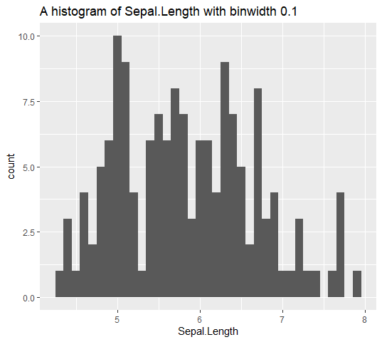

Overview
The string (or character) data type typically requires more manipulation to be helpful for data analysts. Thus, there is a need for a robust package that is up to the task. forstringr is a new package built on top of ‘stringr’ to execute various string manipulations in R programming. The main aim of ‘forstringr’ is to simplify string manipulation for R beginners. This package combines its power with the adaptability of other manipulation tools such as tidyr and dplyr. Like in the stringr package, most functions in forstringr begin with str_. For a quick video tutorial, I gave a talk at Africa R users meetup, which you can find here.
Installation
You can install forstringr package from CRAN with:
install.packages("forstringr")or the development version from GitHub with
if(!require("devtools")){
install.packages("devtools")
}
devtools::install_github("gbganalyst/forstringr")Usage
This section provides a concise overview of the different functions available in the forstringr package. These functions serve various purposes and are designed to aid in string manipulation tasks.
length_omit_na()
length_omitna() counts only non-missing elements of a vector.
library(forstringr)
#> Loading required package: stringr
ethnicity <- c("Hausa", NA, "Yoruba", "Ijaw", "Igbo", NA, "Ibibio", "Tiv", "Fulani", "Kanuri", "Others")
# count all the observations, including NAs.
length(ethnicity)
#> [1] 11
# count all the observations, without NAs.
length_omit_na(ethnicity)
#> [1] 9
str_title_case()
str_title_case() converts string to title case, capitalizing only the first letter of each word while ignoring articles, prepositions, and conjunctions.
Please note that str_title_case() is different from stringr::str_to_title() which converts to title case, where only the first letter of each word is capitalized.
words <- "the quick brown fox jumps over a lazy dog"
str_title_case(words) # from forstringr package
#> [1] "The Quick Brown Fox Jumps over a Lazy Dog"
str_to_title(words) # from stringr package
#> [1] "The Quick Brown Fox Jumps Over A Lazy Dog"
str_left()
Given a character vector, str_left() returns the left side of a string. For examples:
str_right()
Given a character vector, str_right() returns the right side of a string. For examples:
str_mid()
Like in Microsoft Excel, the str_mid()returns a specific number of characters from a text string, starting at the position you specify, based on the number of characters you select.
str_split_extract()
If you want to split up a string into pieces and extract the results using a specific index position, then, you will use str_split_extract(). You can interpret it as follows:
Given a character string, S, extract the element at a given position, k, from the result of splitting S by a given pattern, m. For example:
top_10_richest_nig <- c("Aliko Dangote", "Mike Adenuga", "Femi Otedola", "Arthur Eze", "Abdulsamad Rabiu", "Cletus Ibeto", "Orji Uzor Kalu", "ABC Orjiakor", "Jimoh Ibrahim", "Tony Elumelu")
first_name <- str_split_extract(top_10_richest_nig, " ", 1)
first_name
#> [1] "Aliko" "Mike" "Femi" "Arthur" "Abdulsamad"
#> [6] "Cletus" "Orji" "ABC" "Jimoh" "Tony"
str_extract_part()
Extract strings before or after a given pattern. For example:
first_name <- str_extract_part(top_10_richest_nig, pattern = " ", before = TRUE)
first_name
#> [1] "Aliko" "Mike" "Femi" "Arthur" "Abdulsamad"
#> [6] "Cletus" "Orji Uzor" "ABC" "Jimoh" "Tony"
revenue <- c("$159", "$587", "$891", "$207", "$793")
str_extract_part(revenue, pattern = "$", before = FALSE)
#> [1] "159" "587" "891" "207" "793"
str_englue()
You can dynamically label ggplot2 plots with the glue operators {} or {{}} using str_englue(). For example, any value wrapped in { } will be inserted into the string and you automatically inserts a given variable name using {{ }}.
It is important to note that str_englue() must be used inside a function. str_englue("{{ var }}") defuses the argument var and transforms it to a string using the default name operation.
library(ggplot2)
histogram_plot <- function(df, var, binwidth) {
df %>%
ggplot(aes(x = {{ var }})) +
geom_histogram(binwidth = binwidth) +
labs(title = str_englue("A histogram of {{var}} with binwidth {binwidth}"))
}
iris %>%
histogram_plot(Sepal.Length, binwidth = 0.1)
str_rm_whitespace_df()
Extra spaces are accidentally entered when working with survey data, and problems can arise when evaluating such data because of extra spaces. Therefore, the function str_rm_whitespace_df() eliminates your data frame unnecessary leading, trailing, or other whitespaces.
# a dataframe with whitespaces
richest_in_nigeria
#> # A tibble: 10 × 5
#> Rank Name `Net worth` Age `Source of Wealth`
#> <dbl> <chr> <chr> <dbl> <chr>
#> 1 1 " Aliko Dangote" "$14 Billion" 64 " Cement and Sugar "
#> 2 2 "Mike Adenuga" "$7.9 Billion " 68 "Telecommunication, …
#> 3 3 "Femi Otedola" "$5.9 Billion" 59 "Oil and Gas"
#> 4 4 " Arthur Eze" "$5 Billion" 73 "Oil and Gas"
#> 5 5 "Abdulsamad Rabiu" "$3.7 Billion" 61 "Cement and Sugar"
#> 6 6 " Cletus Ibeto " " $3.5 Billion" 69 "Automobile, Real Estat…
#> 7 7 "Orji Uzor Kalu" "$3.2 Billion" 61 "Furniture, Publishi…
#> 8 8 "ABC Orjiakor " " $1.2 Billion" 63 "Oil and Gas"
#> 9 9 " Jimoh Ibrahim" "$1 Billion " 54 "Insurance, Oil and Gas…
#> 10 10 "Tony Elumelu" "$900 Million" 58 " Banking "
# a dataframe with no whitespaces
str_rm_whitespace_df(richest_in_nigeria)
#> # A tibble: 10 × 5
#> Rank Name `Net worth` Age `Source of Wealth`
#> <dbl> <chr> <chr> <dbl> <chr>
#> 1 1 Aliko Dangote $14 Billion 64 Cement and Sugar
#> 2 2 Mike Adenuga $7.9 Billion 68 Telecommunication, Oil, and Gas
#> 3 3 Femi Otedola $5.9 Billion 59 Oil and Gas
#> 4 4 Arthur Eze $5 Billion 73 Oil and Gas
#> 5 5 Abdulsamad Rabiu $3.7 Billion 61 Cement and Sugar
#> 6 6 Cletus Ibeto $3.5 Billion 69 Automobile, Real Estate
#> 7 7 Orji Uzor Kalu $3.2 Billion 61 Furniture, Publishing
#> 8 8 ABC Orjiakor $1.2 Billion 63 Oil and Gas
#> 9 9 Jimoh Ibrahim $1 Billion 54 Insurance, Oil and Gas, Real Estate
#> 10 10 Tony Elumelu $900 Million 58 Banking